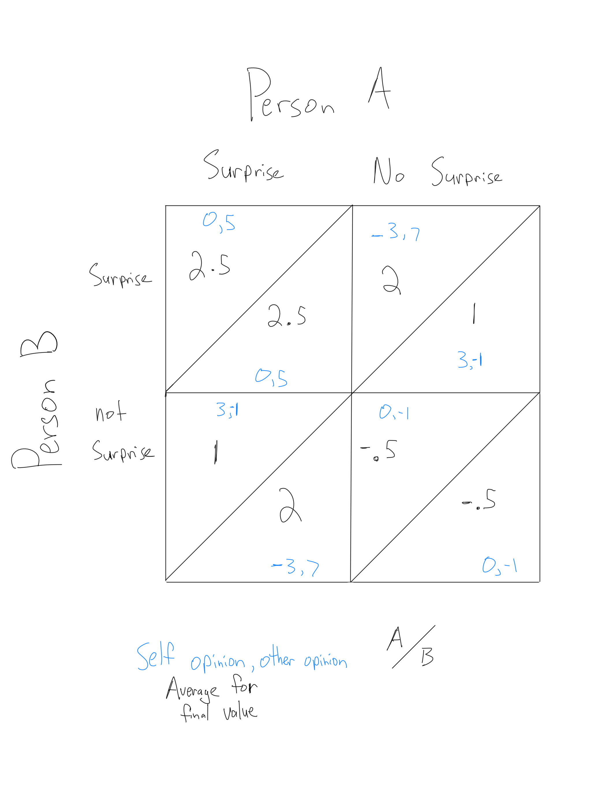

Modeling Valentine’s Gift Giving
Posted on Fri 10 February 2017 in Economics
With a holiday to either celebrate one’s love or corporate consumerism, 1 I thought it would be fun to try and model the value of surprising a significant other with a gift. Below, you can see the model with a key on the side to demonstrate how to interpret this image.

The upper left triangle per box matches the value Person A receives from the action in the respective column, and the lower right triangle matches the action Person B on the left performs. These two people can either surprise or not surprise their partner. I calculated each number using a complex formula2, and I took the overall value to be an average of what you feel towards yourself and your opinion for the other person.3
For example, the square in the top left means that both Person A and Person B surprise each other with a gift. This does not change their self opinion but grows their opinion of the other person by five units. This means that the overall value that they gain from that action is 2.5, which we’ll use in a minute.
We’ve talked about Nash Equilibrium before, but the main idea is that the game is at equilibrium when each player can’t make a move to better him or her self, no matter what the other person does. We can find that by limiting one person’s move and then figuring out what the other player will do in response to that action.
For example, say that Person B surprises Person A with a gift. By covering the bottom row (not surprise) and comparing the numbers in the top left triangle in each column, we can see that Person A receives a higher value when surprising Person B with a gift. Similarly, if we move down a row, we can see that even when Person B doesn’t surprise Person A with a gift, Person A receives a higher number by surprising Person B (with a value of 1 as opposed to -.5)4
Confusing? Somewhat circular? All true! But by using the same technique to figure out the optimal move for Person B (spoiler: we end up with the same result) it turns out that we do have a Nash Equilibrium that one should always surprise one’s significant other on Valentine’s Day.5
-
Depending on one’s point of view ↩
-
I came up with them as to what felt right. ↩
-
Of course, all of these values can be changed depending on what you think is more accurate. Maybe person A and B both rate their self opinion more crucial than their opinion of the other person, in which case the mean can be changed to a weighted mean. Or a -3 can be changed to a -45, etc. ↩
-
These numbers are called utility values, which are units of happiness. ↩
-
Although what gift to give is another table entirely. ↩